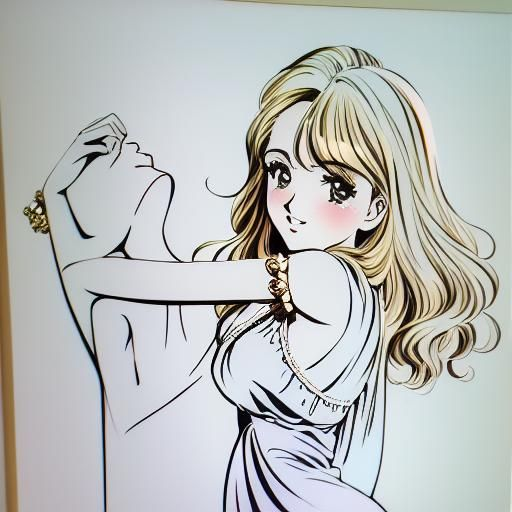

방교수님 피셜 방교수님 실물과 가장 닮았다는 방퉁이입니다. 이 그림을 ai로 돌려보았습니다.
1) 어플로 돌림
공주버전
왕자버전

레트로 소녀버전
레트로 소년 버전
수채화버전
방퉁이가 이쁘고 잘생겨졌습니다.
2)외국 인터넷 사이트에서 돌림

원본율 50퍼센트입니다. 진짜 귀여운 캐릭터가 나왔습니다.
원본 60퍼 버전입니다. 개인적으로 이게 가장 잘 나온 것 같습니다. 캐릭터도 귀엽고 방교수님과 이미지가 가장 어울립니다.
원본율 70으로 하니 방퉁이 미남버전이 나왔습니다.
실제 사진으로 하면 고소 당할 것 같아서 방퉁이로 해봤습니다. 나중에는 다른 팬아트들도 돌려보겠습니다.
후원댓글 12개
댓글 12개 ▼